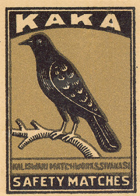

Tuesday, August the 2nd, 2016
back to: title, date or indexes
Back in 2007, and then again in 2010, I wrote about Kaka. Although I did not mention it specifically, I was at the time under the impression that Kaka was a foopballer. I have now learned that Kaka is, in fact, a bird. This sheds an entirely new light on things, and I fear I must go back to the drawing-board.
